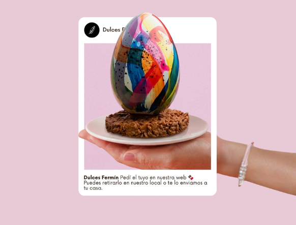

Más organización
Una comunicación planificada y constante.
Acompaño a negocios de gastronomía y hotelería a gestionar su presencia digital y crear contenido que refleje lo que los hace únicos.
Hablemos de tu negocioUna comunicación planificada y constante.
Imágenes y videos que muestran tu esencia.
Información alineada en tus canales digitales.
Cada negocio tiene necesidades diferentes. Podemos trabajar en tu presencia digital, crear contenido audiovisual o ayudarte a gestionar tus propias redes con mayor autonomía.
.png)
Aprendé a organizar tus ideas, planificar publicaciones y crear contenido con una mirada estratégica para gestionar tus propias redes.

Una mirada integral para ordenar y potenciar el contenido en tus canales digitales.
.png)
Mostrá tus productos, espacios y experiencias con contenido propio, pensado para comunicar lo que hace especial a tu marca.
No se trata de hacer por hacer. Primero entendemos qué necesitás y después definimos cómo podemos trabajar para conseguirlo.
Me contás sobre tu negocio, tus objetivos y aquello que hoy necesitás resolver.
Definimos una propuesta de trabajo acorde a tus necesidades y prioridades.
Ponemos en marcha el trabajo y mantenemos una comunicación cercana durante el proceso.
Cada proyecto es una oportunidad para descubrir qué hace especial a cada negocio y transformarlo en contenido visual que conecte.


Me resulta apasionante la idea de vivir en movimiento, conocer nuevos lugares y descubrir otras formas de hacer las cosas. Y quiero que esa manera de ver el mundo también forme parte de mi trabajo: con curiosidad, flexibilidad y ganas de seguir creando.
Creo que detrás de cada negocio hay una historia que merece ser contada. Por eso, antes de pensar en publicaciones o imágenes, me interesa conocer a las personas, entender sus objetivos y descubrir qué hace especial a cada marca.
Trabajo la cercanía, responsabilidad y el compromiso con cada proyecto, buscando que la comunicación digital refleje lo que el negocio es de verdad.
Me siento muy contenida y acompañada en cada proyecto. Yamila sabe escuchar, entender lo que me gusta y transmitirme exactamente lo que quiero expresar. Estoy feliz de poder trabajar conectadas y contar con su apoyo. ¡Todo quedó hermoso, tal como lo imaginaba! Una genia, sin dudas.
.png)
Excelente experiencia trabajando con ella. Destacamos su compromiso, creatividad y dedicación en la gestión de nuestras redes sociales. Siempre está atenta a los detalles, aporta ideas y busca la mejor manera de transmitir la esencia de nuestra marca. ¡La recomendamos totalmente por su profesionalismo y calidad humana!
¡No tengo palabras! ¡Espectacular lo que publicaste! Amé cómo quedó, los momentos que lograste captar y la gente mirando el atardecer. ¡Impresionante! ❤️
.png)
Contame sobre tu negocio, qué necesitás mejorar y qué tenés en mente. Encontramos la mejor forma de trabajar juntos.
Hablemos por WhatsApp